Villa interior · Mountain View, Tagamoa, Cairo
A raw concrete shell turned into a warm, calm home, designed and built by us. Open-book Italian marble runs across the floors, and the staircase has marble treads, a full-height timber slat screen and hidden step lighting.
Drag the line to compare.

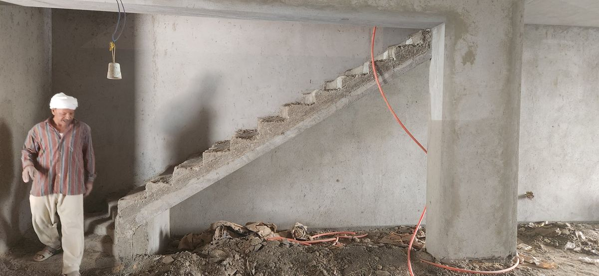
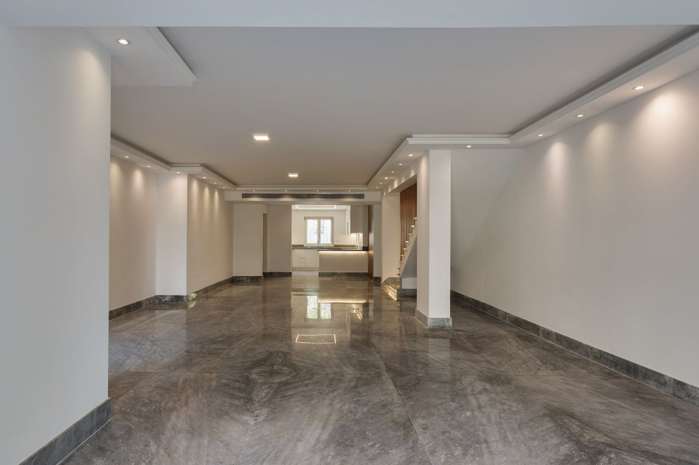
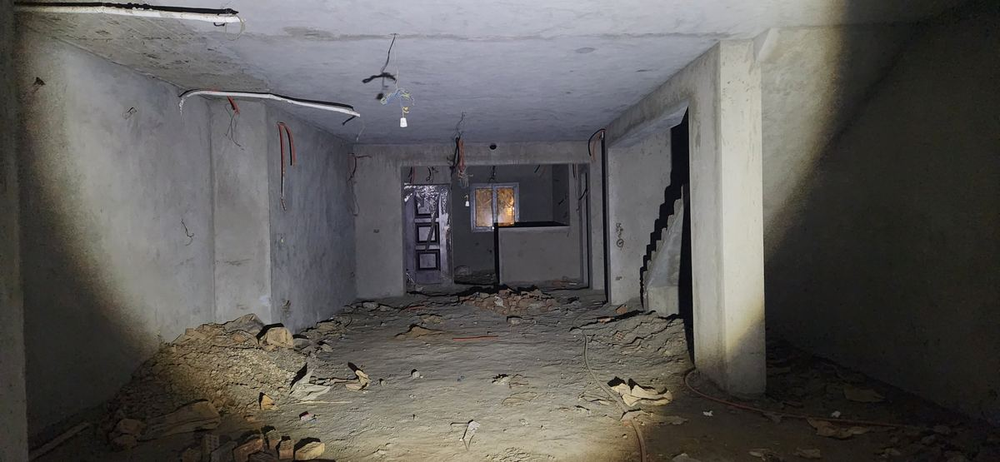
Drag the line to see it move.
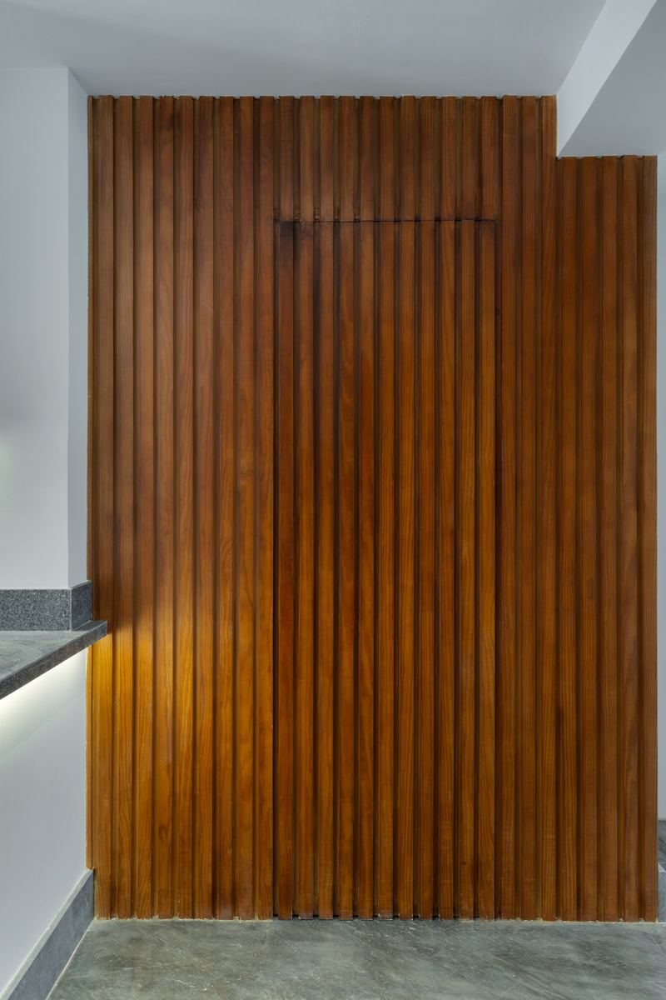
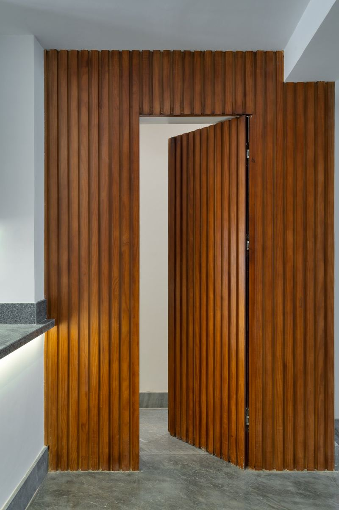
Hidden door · flush with the timber slat wall
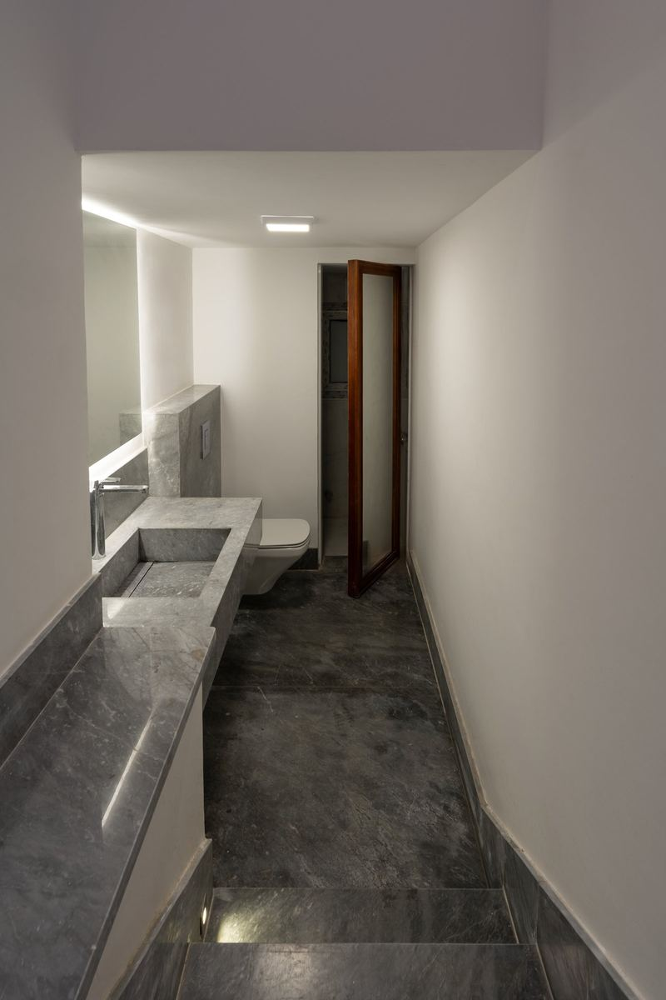
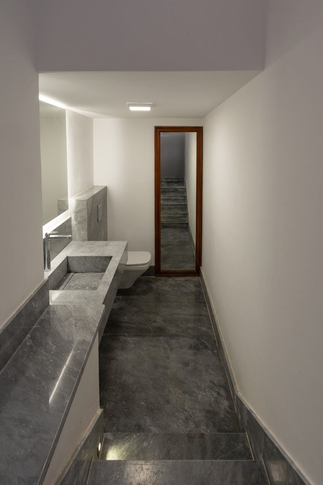
Hidden bathroom storage · behind the mirror


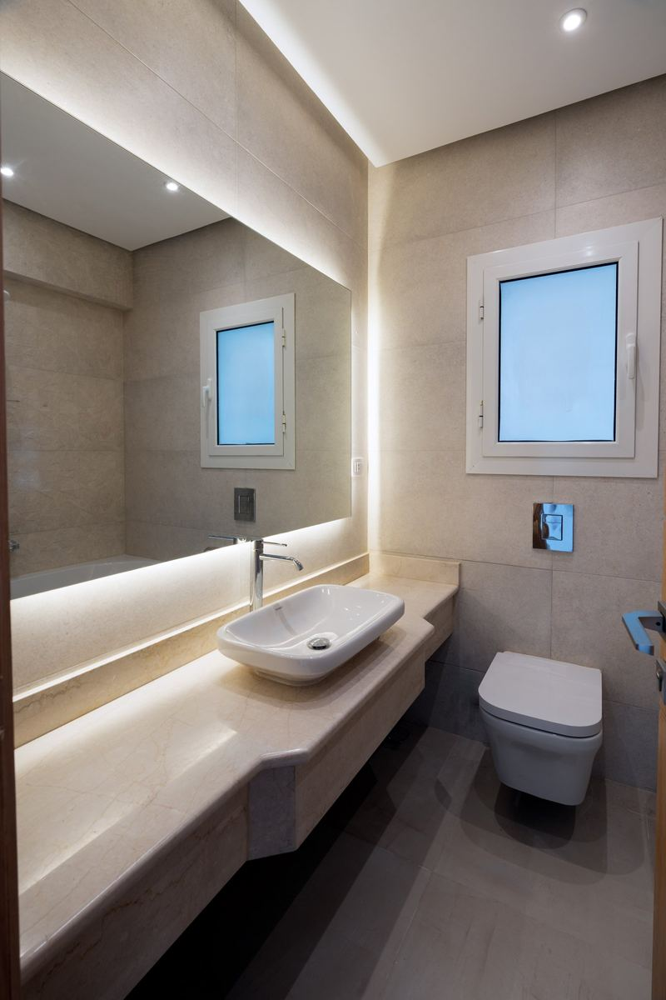
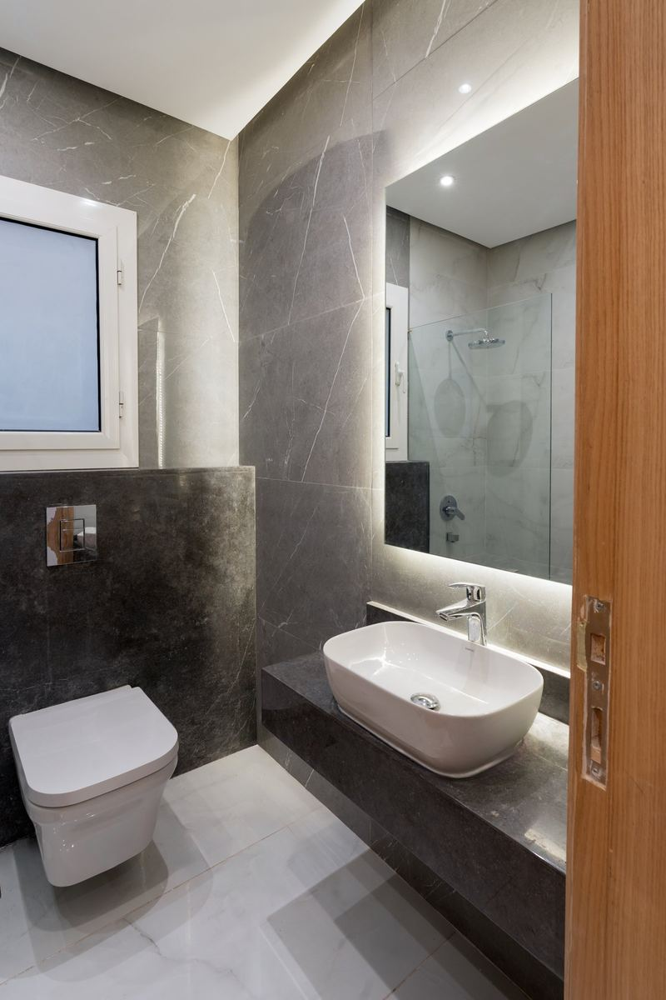

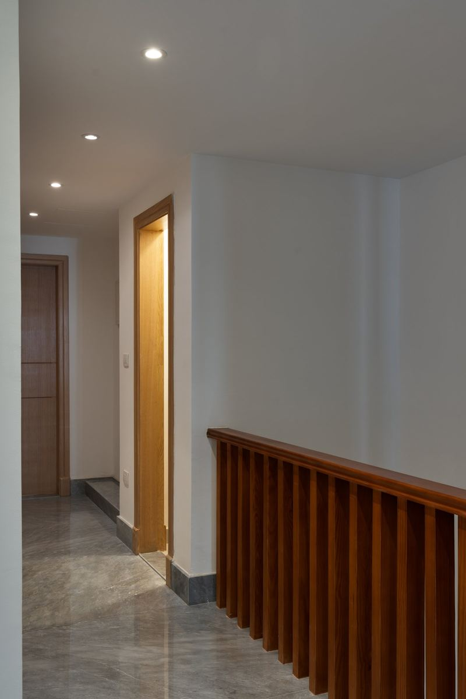
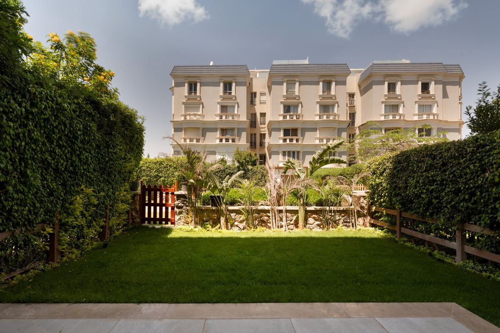
Tell us about your space. We'll draw it, price it, and build it.
WhatsApp ushello@ikdu.build